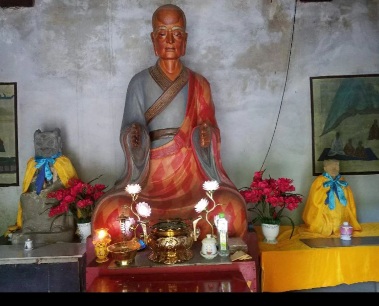

20260720拉手能量法基础全书
修炼修行符咒术法占卜预测
从零开始激发内在能量——紫鸢真人传授体系入门指引
编者说明
本书根据「 拉手」文件夹中已刊行的《拉手能量法：开启内在能量与智慧的古传修炼》与紫鸢真人传授的入门答疑整理而成，整理日期 2026-07-18。
本书定位为基础/入门读本，面向零基础或初学读者，讲清"如何开始、如何体会、如何筑基、如何安全自用"。手印、剑指、符咒、护卫光球、三家相见等更深入的内容，见配套《拉手修真进阶全书》。
序：为什么要练拉手能量法
在气功流派众多、争议不断的今天，拉手能量法提供了一条相对安全、易于入门、可实证的路：
· 它不主张"采气"（不采大地山川、日月星辰之气），直指激发自身内在超能；
· 它强调不加意念、顺其自然、不追求入静，简化了传统气功复杂的"调心"；
· 它坚决不收功，能量自然分布体内外，从设计上就避免了"出偏"；
· 它说"绝无偏差之说，安全有效"，且能自然修复身体、提升健康。
一句话：两手相对，细心体察，能量自现；坚持拉手，返老还童。
目录
第一篇 认识拉手能量法
· 第一章 什么是拉手能量法
· 第二章 拉手能量法与其他气功的区别
第二篇 入门基础：激发手上能量
· 第三章 练习前的准备
· 第四章 基本姿势与动作要领
· 第五章 呼吸、意念与动作
· 第六章 手上能量感与气感解读
· 第七章 练习时长与"不收功"
第三篇 能量进阶：返观内视体内光球
· 第八章 光化观想：点亮内在光明
· 第九章 体内光球与返观内视
· 第十章 清理负能量：观想海水净化
· 第十一章 虚实判断与百日筑基
第四篇 日常融入与基础应用
· 第十二章 行住坐卧皆是禅
· 第十三章 自我疗愈：隔空扫
· 第十四章 为孩子清理与用手背测病
· 第十五章 看气看光训练（肉眼通入门）
第五篇 安全修炼与基础答疑
· 第十六章 安全要点
· 第十七章 常见问题解答
附录
· 附录一 练习要点速查
· 附录二 气感对照表
· 附录三 名词解释
第一篇 认识拉手能量法
第一章 什么是拉手能量法
拉手能量法，是一种强调实证实修的古传返还之术。根据传承者紫鸢真人的介绍，这一功法源于民间，后由其师傅（一位曾在中国原国家科委工作的研究人员）传授，早期只亲传、口传心授，如今公开是为"利益大众"。
它的几个显著特点：
· 古传返还之术：帮助生命状态"返还"到先天的、百病不生的"婴儿"状态。
· 激发体内超能：核心在"激发体内超能"，而非吸收外气。八九十年代引进的美国测量仪测出，练习时手上会释放电子——常人只有几个，练习者一般达几千个。
· 不加意念，顺其自然：不追求刻意入静，认为"不入静而达到真静超静"。
· 绝无偏差，安全有效：不采外气、注重自身能量激发与清理，避免了传统气功易出现的"出偏"。
· 实修实证，层层递进：从拉手感知能量，到内视光球，再到更高层次的感知与转化。
在拉手能量法里，"能量"比传统气功中"气在经络运行"更具象：它可以被感知、被激发，还能表现为物理效应（释放电子）。这种能量是构成"光体"的基础，被认为是"炁"；能量充足时，身体内外白亮，细胞转化为"高能量细胞"，从而百病不生、延年益寿。
第二章 拉手能量法与其他气功的区别
理解这些区别，才能把握本法的精髓：
· 对外气的态度：传统气功常有"采气"——主动吸收外界之气。拉手能量法明确"千万不要去采"，认为"采气是气功时代的错误"，真正的能量来源于自身内部激发。
· 对"收功"的态度：许多功法有特定收功程序。拉手能量法坚决不收功——能量会自然分布于体内外；强行收功反而可能把"以前修的全部放掉"或让"外来的"占据体内。
· 对经络穴位的依赖：部分功法强调循经守穴。拉手能量法核心在激发整体能量、观想光球，解决问题时强调"用能量扫除这个地方的气场"，不拘泥于经络穴位；甚至认为传统"小周天"逆行任督的方法容易出偏。
· 对"出偏"的预防：其功法设计本身就阻止了"出偏"现象的出现——这被认为是在"救人"。安全性基础在于：激发自身能量、强调放松、不加意念。
第二篇 入门基础：激发手上能量
"万丈高楼平地起。"入门的基础，就是激发和感知手上的能量。这看似简单，却是连接你与内在能量世界的金钥匙。
第三章 练习前的准备
· 环境：选相对安静、空气流通处，避免嘈杂或空气污浊。室内室外均可，以自己舒适为宜。
· 心态：轻松、自然，不对练习抱过高期望或得失心。开始阶段允许杂念存在，不去对抗，只需把注意力放在手上。
· 着装：穿宽松舒适衣物，不宜过紧，以免影响气血流通。
第四章 基本姿势与动作要领
拉手能量法的基本姿势非常灵活，站坐均可，核心是模仿达摩祖师的坐禅手形与臂形：
· 姿势：可打坐或自然站立，关键在身体中正、放松。
· 手臂：两臂微微抬起，腋下像夹着两个乒乓球，不要紧贴身体；手臂也不要搭在桌子或其他物体上，保持悬空。
· 手：两手在小腹前相对，保持一定距离，不相互接触或贴在一起；手形自然放松。
· 眼睛：放松地看着两手、两手中间的虚空，或两者之间自然转换目光；不要死盯某一点，也不要刻意加任何意念或想象。
要点：两手相对，这就是打开了你的能量场。
第五章 呼吸、意念与动作
呼吸——自然呼吸：入门阶段对呼吸无特别要求，保持自然、轻松即可，不刻意调深浅快慢，更不要憋气。随着练习深入、能量增强，呼吸会自然变得细长、均匀。
意念——不加意念，只管细心体察：这是本法最重要特点之一。
· 不加意念：不要去想"气"在哪里运行，不要导引，也不要给能量下指令（比如让它去某部位），一切顺其自然；
· 细心体察：把注意力只集中在两只手上及两手之间，用"心"去感受任何细微变化——专注但不带评判；
· 允许杂念：初学者难无杂念，正常。杂念起时不对抗、不压制，轻轻把注意力拉回手上。专注手上，就能在不追求入静的情况下，自然进入"真静超静"。
动作——微动推拉或不动：
· 微动推拉：若选择微动，动作要非常缓慢，可做极小的、有规律的拉开与靠拢，体会"动作越慢，力度感反而越大"；
· 可以不动：即使完全静止，只要按要求细心体察，同样能激发体内能量；
· 内在激发是关键：动作是外在形式，最重要的是内在能量的激发；动作过快反而会丢失那种微妙的能量感觉。
第六章 手上能量感与气感解读
按要领练习并细心体察一段时间后，你会在两手上或两手之间感受到与平时不同的微妙感觉——这是体内能量被激发的表现，称为"气感"或"能量感"。常见包括但不限于：
· 轻、重、浮、沉：手掌或手之间有轻飘、沉重、上浮或下沉的力量；
· 凉、热、凉风、温热：有凉气、热气、微风吹过，或手掌发热、身体温热；
· 吸引、排斥、推不动、拉不开、磁力感、粘稠感、物质感：两手间像有磁铁相互吸引或排斥，或感觉手间有粘稠物质。
你可能不会同时体验到所有感觉，出现其中一种或几种，就说明已经打开了手上的能量，入了修炼的门。这些感觉会随持续练习越来越强烈。手上的感觉就是"炁"——道炁长存。
提示：开始拉常有"凉风"，是排寒过程；温热则是能量上来的表现。掌心发麻、跳动、抽动，是"粘稠物质感"，属正常对的感觉。
第七章 练习时长与"不收功"
时长——随时可练：没有固定时长要求，按自己时间和感觉决定。一般练得越久，能量提升越快；哪怕每天几分钟，持之以恒也积少成多。疲惫时、工作间隙、睡前都可练。
不收功——大舍之心：与许多功法不同，拉手能量法不强调刻意收功。想停时，自然放下手、恢复日常即可。
· 传承者说："收功就是汇聚"，而本法是关于"释放"与"自然分布"的。刻意收功反而可能把"以前修的全部放掉"，或让"外来的"占据体内。
· 超能量是高级特异生命体粒子，看到有异物就不会在体内分解——所以要"使劲放"，把旧的、寄居的全部放空，激活自身能量。
· 放下手去睡觉、工作或聊天，能量都会在体内外自然运行分布。关键在于保持一颗大舍之心，利益大众。
第三篇 能量进阶：返观内视体内光球
掌握激发手上能量后，便可进入更深入的阶段：通过返观内视，感知并观想体内的能量光球。这不仅能提升能量层级，更是开启内在感知、实现身心转化的关键一步。
第八章 光化观想：点亮内在光明
进阶始于对身体的"光化"观想，这与手上能量激发同步进行：
· 观想身体内外充满白光：拉手感知手上能量的同时，尝试观想整个身体从内到外充满明亮、纯净的白光，想象白光穿透每一个细胞，将其照亮、净化。
· 细胞转化与健康：能量充足时，身体内外自然白亮，这被认为是细胞转化为"高能量细胞"的表现，身体因此"自然百病不生，延年益寿"。
· 观想头顶的太阳（辅助）：可时时观想一个直径约 20 厘米的太阳悬在头顶上方，散发金光，照亮穿透全身，排除杂质。清晨或傍晚适当看太阳（控制在一两秒钟，闭眼看眼前光感），也能加速能量提升、增强光感。
第九章 体内光球与返观内视
手上能量感清晰稳定后，把意念和感知向身体内部延伸，尤其小腹（下丹田）：
· 同步观想：手上拉出能量光球、清晰稳定时，同步观想小腹内部（肚脐下约四指、往里约三指处的虚空，即"虚危之间"）也存在同样大小、同样能量的光球。一开始难观想小腹，也可先选胸口内部。
· 能量关联：手上能量球与体内光球相互关联——手上足，体内同步有光球；观想感知体内光球，也能反过来增强手上能量感。
· 返观内视的方法：通常闭上眼，把注意力集中在观想光球的部位，尝试用"心眼"去"看"那个光球。一开始可能"看"不清甚至像"假想"，正常——不执着是否真看到，重点在持续观想、用心感受，想象光球越来越清晰明亮（像手电筒在黑暗中探照，每"看"一次都在照亮身体内部）。
· 为何一开始看不到：一是体内能量不足（黑夜里没灯看不到）；二是体内有负能量或"灰场"遮挡"心眼"（像大雾碍视线）。
第十章 清理负能量：观想海水净化
体内负能量会阻碍返观内视与能量提升。可用观想清理：
· 观想自己身处一片清澈、宽广的大海中；
· 想象身体里的浑浊之气（灰、黑、黄等）被清澈海水不断冲刷、洗涤；
· 观想这些浑浊之气形成气泡，通过全身毛孔向外冒出、消散在海水中；
· 持续观想，直到身体变得清亮透明、无杂质。
此法改善身体气场、移除阻碍"心眼"的负面因素，让返观内视更容易。
第十一章 虚实判断与百日筑基
如何区分"观想"与"真实看到"？
· 真实：通过返观内视真正看到时，景象清晰且固定不变；
· 幻想：只是想象时，景象往往时有时无、变化莫测、不清晰不稳定。
持续练习，随着"心眼"开启与能量增强，会越来越清晰。
能量修复身体 = 百日筑基：
· 从手热到全身热：初期主要手部能量感与温热，渐扩展到全身；
· 小腹热与脚心热：能量充足的表现；
· 百病不生：全身温热（尤其小腹、脚心）时，自愈力大增；
· 筑基完成 = 恢复如婴儿：拉能量即"百日筑基"、修复身体。当能通过返观内视看到整个身体"通透如玻璃"，才算修复完成——道家称"恢复如婴儿"，是打下坚实修炼基础的表现。
记住：耐心和坚持是走向成功的唯一途径。
第四篇 日常融入与基础应用
拉手不是"练功"，而是可以融入生活、用于自我疗愈的实修。
第十二章 行住坐卧皆是禅
· "随时拉一拉，时间越长提升越快"——行走坐卧皆可练；每天边走边拉手，也有很强的能量感。
· 练出能量感后，保持两手固定姿势、放开心态，去看脑海里的杂念就行；晚了想睡，放下手自然睡，感觉会越来越强。
第十三章 自我疗愈：隔空扫
人的疾病多是"正能量缺失、负能量入侵"，用手上真能量"扫"即可修复。
· 一般不适：两手从前往后、隔空扫不舒服处，能量穿透清理净化（不是捧气灌顶，是用真能量）。举一反三，哪里不舒服扫哪里。
· 失眠：晚睡前打坐，拉出能量，两手离头顶五到十厘米，隔空抚整个头顶、从前往后，体察头内感觉；自然放出的能量蓬松舒适，不要用力。
· 抑郁：拉出手上能量感，隔空扫头部，能量穿透大脑、把脑部杂场清理成白亮。
· 老寒腿 / 风湿关节炎 / 中风：手上能量隔空扫（"只有这能量能治风湿关节炎"，治中风效果亦神奇）。肩周炎、颈椎腰椎劳损也多能改善。
第十四章 为孩子清理与用手背测病
· 为孩子做：完全可以。一是手上能量清理，二是用心观想孩子大脑白亮；久之脑细胞成高能量细胞，记忆力增强。
· 重要注意：小孩 12 岁以前，不要用手上能量灌输（除非有疾病），只扫、清理净化即可——小孩体内场本平衡，再补如吃补药过甚。清理是扫干净，灌输是能量进入储存（如扫地 vs 冲水）。
· 用手背测病：手背敏感。沿脊柱、身前体后或头顶，手背离开身体感应寒热，分辨热症寒症；手停住不动处即病灶。测出后用手掌隔空抚摸，能量会自动修复该处气场（需先练到看到手外半厘米光，且"不要用气治疗"，要用真能量）。
第十五章 看气看光训练（肉眼通入门）
两手相对打开能量场的同时，也学会了看气场的"肉眼通"。
· 训练方法（看空）：选纯黑屏幕或白墙为背景；食指竖在离屏约 20 厘米处，眼正对屏幕、离手指约 40 厘米；不看指尖，焦点聚集在指尖上方约 1 厘米处的虚空（约黄金分割点 0.618）。保持姿势与焦点，持续凝视背景。
· 进阶体会：初练可能见手指边有白色雾气；练几天后，会在雾气里、贴手一毫米处看到通透的、像真空一样的颜色——那就是光。越看越亮、越看越厚，便是肉眼通开启。
· 辅助验证：用手机对手在纯色背景前拍照、放大，有时更易观察到手边辉光或气场，说明看到的并非幻觉，而是真实存在的能量场。
第五篇 安全修炼与基础答疑
第十六章 安全要点
· 不加意念、不用念力：用念力会气积胸口、气闷；只用一心去感觉。
· 坚决不收功：放空旧能量，让真能量自然分布。
· 不出偏的根基：不采外气、修自身、不加意念——本法设计上就避免出偏。
· 儿童：12 岁前不灌输，只清理。
· 循序渐进：不急于求成；警惕念力过重与过度执着。
· 大舍之心：排空寄居能量，激活自身能量，利益大众。
第十七章 常见问题解答
· 每天练多久？ 随时拉，时间越长提升越快；顺其自然，持之以恒。
· 为什么一拉就有感觉？ 传承者已把"信息密码"打进去，照做一拉就有——这就是获取超能量的方法。
· 17 岁能练吗？ 可以，不分年龄；仅 12 岁前不灌输。
· 拉能量是提升阳气吗？ 对。能量足，超能力会自然出现；拉几天身体就温热，温热则百病不生。
· 手上有感觉但没气雾光色？ 看气看光要训练眼睛——别看手，看手外三到五厘米，"看空"才能看到。
· 练了身体发热正常吗？ 正常。先手热，后全身渐热、小腹热、脚心热；人过三十七八岁身体渐凉，正需正能量修复。
· 能广传吗？ 可以广传任何人。能治病、延寿、增福、改命改运；练了正气足、心清净，可遍寻有缘人广传真法。
附录
附录一 练习要点速查
1. 姿势：达摩手形，腋下夹两乒乓球，两手小腹前悬空相对，不贴身不搭桌；
2. 眼睛：放松看两手或两手间虚空，不加意念；
3. 呼吸：自然呼吸，不憋气；
4. 意念：不加意念，只管细心体察手上微妙感觉；
5. 动作：微动推拉（越慢力度感越大）或不动，关键在内在激发；
6. 气感：轻重大沉凉热吸引排斥磁力粘稠等，出现一两种即入门；
7. 进阶：光化观想 + 体内光球 + 返观内视 + 海水净化；
8. 筑基：返观见全身通透如玻璃 = 恢复如婴儿 = 百日筑基成；
9. 收功：坚决不收功，大舍之心，能量自然分布；
10. 应用：隔空扫自疗、为孩子清理、手背测病、看空练肉眼通。
附录二 气感对照表
| 类别 | 常见感觉 | 说明 |
|------|----------|------|
| 轻重 | 轻、重、浮、沉 | 手掌或手间的力量变化 |
| 温度 | 凉、热、凉风、温热 | 凉风多为排寒，温热为能量上来 |
| 磁感 | 吸引、排斥、推不动、拉不开、磁力感 | 如磁铁般相互作用 |
| 质感 | 粘稠感、物质感 | 手间似有粘稠物质，属正常 |
附录三 名词解释
· 拉手 / 拉气：两手相对悬空微动或不动，体察手上能量微妙感觉的古传返还之术。
· 炁：手上的能量感觉，即生命能量，道炁长存。
· 气感 / 能量感：体内能量被激发后在手上或手间出现的微妙感觉。
· 化气成光：先有气后感，后成光；用肉眼（看空）可见手边雾中通透真空色即光。
· 返观内视：闭眼用"心眼"向内"看"体内光球，开启内在感知。
· 百日筑基：拉能量修复身体，至返观见全身通透如玻璃（恢复如婴儿）即筑基成。
· 肉眼通：经"看空"训练，肉眼能感知气场/辉光。
· 大舍之心：排空旧寄居能量、不收功，激活自身真能量、利益大众。
整理者按：本书系从「 拉手」文件夹中已刊《拉手能量法：开启内在能量与智慧的古传修炼》与紫鸢真人入门答疑辑要而成，面向零基础读者。修炼之事，信验在己，愿读者以轻松自然之心，从"两手相对"开始，渐入佳境。基础稳固后，可续阅配套《拉手修真进阶全书》。